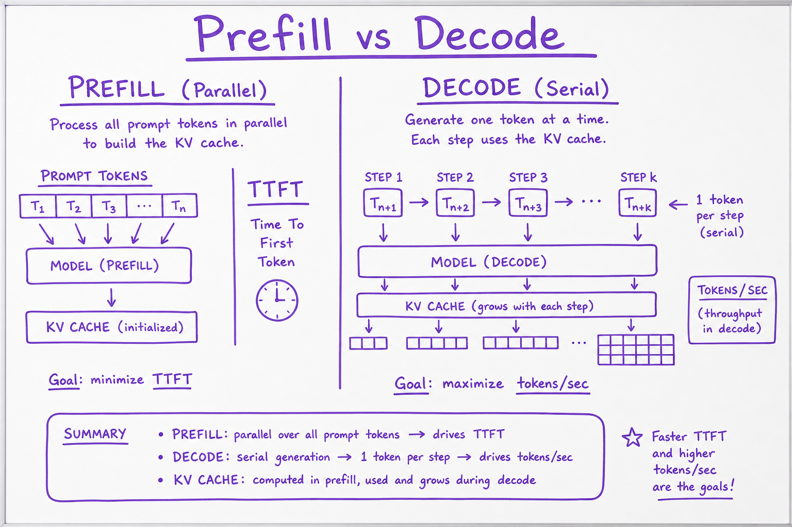

Inference internals // Inference & serving
Prefill vs decode, the KV cache, PagedAttention, continuous batching and speculative decoding.
01 — At a glance
How context limits, prefill vs decode, KV cache memory growth, GQA, and PagedAttention determine latency, cost, and max concurrent users on GPU inference.

Prompt tokens fill the context budget during prefill while KV cache grows per layer; decode appends one token at a time reusing cached keys and values.

Prefill processes the whole prompt in parallel and sets time to first token; decode generates one token at a time and sets tokens per second.
02 — What & Why
Context window caps prompt+completion tokens. KV cache stores per-layer key/value tensors for prior tokens so decode doesn't recompute full attention. Dominates GPU memory at long context and high concurrency.
Token counting: Tokenization & Context. Serving: Model Serving (vLLM).
03 — Core Concepts
| Term | Definition | Gotcha |
|---|---|---|
| Context window | Max total tokens in/out | Shared budget |
| KV cache | Stored K,V per layer per token | Grows linearly with seq |
| Prefill | Process prompt in parallel | Sets TTFT |
| Decode | One token per step | Memory bandwidth bound |
| PagedAttention | Paged KV blocks in vLLM | Reduces fragmentation |
| GQA | Grouped-query attention | Fewer KV heads |
04 — API Surface
# HuggingFace generate with cache
outputs = model.generate(
input_ids,
max_new_tokens=256,
use_cache=True, # KV cache enabled
)
# past_key_values returned for incremental decode05 — When to Use / When NOT
| Tactic | Use | Skip |
|---|---|---|
| Long doc Q&A | 200K context model OR RAG | Stuff 500 pages raw |
| KV cache | Always at decode | Training (recompute activations |
| PagedAttention | Multi-tenant serving | Single-request local |
| Prompt caching API | Repeated system prefix | Unique prompts |
06 — Architecture
Prefill: all prompt tokens -> fill KV[layer, 0:prompt_len]
Decode step t: compute Q_t; attend K,V[0:t]; append KV_t; sample token07 — Deep Dive: Context Window
Models advertise 128K, 200K, 1M — check effective quality at extreme lengths (needle tests). Long context costs linear $ and super-linear prefill compute. RAG often cheaper than 1M stuffing.
08 — Deep Dive: KV Cache Mechanics

Per layer: cache K and V for all prior tokens; new token only computes Q and attends to cached K/V.
Without cache, each decode step recomputes attention over full history — O(n²) per step catastrophe.
09 — Deep Dive: Prefill vs Decode
Prefill: compute-bound matmuls over prompt length → TTFT.
Decode: memory-bound KV reads → tokens/sec. Long prompts hurt TTFT; long answers hurt total time and KV size.
10 — Deep Dive: PagedAttention

vLLM allocates KV cache in non-contiguous pages like OS virtual memory; enables continuous batching.
See Model Serving (vLLM). 2-4× throughput vs naive static batching.
11 — Deep Dive: GQA / MQA
Share K/V heads across query head groups. Cuts KV memory 4-8× with minimal quality loss. Llama 3, Mistral use GQA for long-context serving economics.
12 — Inference internals — why LLMs are slow and what fixes it
Serving a model well is a systems problem with four or five recurring ideas. Learn them once and every latency/cost mystery becomes diagnosable.
13 — Prefill vs decode — the fundamental split
PREFILL process the whole prompt in parallel → compute-bound
determines TIME TO FIRST TOKEN (TTFT) long prompts hurt here
DECODE generate tokens one at a time, each step → memory-bandwidth-bound
re-reads weights + KV cache long outputs hurt here
Now put numbers on it, because the numbers are where the intuition lives. Forward-pass compute is ≈ 2 × params × tokens FLOPs (each parameter participates in one multiply-accumulate per token). Take an 8B model on a GPU with ~1000 TFLOPS of dense bf16 compute and ~3.35 TB/s of HBM bandwidth (H100-class; treat all hardware numbers as illustrative):
PREFILL a 2,048-token prompt: FLOPs = 2 × 8e9 × 2048 ≈ 33 TFLOPs at ~50% achieved utilization (500 TFLOPS) → ≈ 66 ms ← compute-bound: bytes moved (weights once, reused across all 2048 tokens) = 16 GB → ~5 ms compute time ≫ memory time ⇒ the ALU is the bottleneck DECODE one token (batch = 1): FLOPs = 2 × 8e9 × 1 ≈ 16 GFLOPs → ~0.03 ms of compute bytes = ALL weights re-read: 16 GB → 16 / 3350 GB/ms ≈ 4.8 ms memory time ≫ compute time ⇒ the memory bus is the bottleneck → single-stream ceiling ≈ 1000/4.8 ≈ 208 tokens/s, NO MATTER how fast the ALUs are the ratio: at batch 1, decode uses < 1% of the GPU's compute. Batching B requests reads the weights ONCE for B tokens of work → decode throughput scales ~linearly with batch until you (a) run out of KV memory or (b) become compute-bound again (crossover around B ≈ compute/bandwidth intensity ≈ a few hundred on this GPU).
That asymmetry is the whole economics of LLM serving: prefill burns compute, decode wastes it — unless you batch. Every serving technique in this chapter is a way to keep the memory bus amortized (batching, paging, prefix reuse) or to move fewer bytes (quantization, GQA, speculative decoding).
Mini-scenario
Your team self-hosts an 8B model for an internal copilot. At launch: 40 tok/s per user, everyone happy. Three months later users report "it types slowly now" — but GPU utilization reads 38%, so ops says the GPU is idle. Both facts are consistent: decode is bandwidth-bound, so SM utilization is always lowish, and the real change is concurrency — 30 simultaneous sessions now share one memory bus and one KV pool. The fix isn't a faster GPU tier with more FLOPs; it's more bandwidth, more KV room (quantized KV), or a second replica. You can't diagnose this without the prefill/decode split.14 — The KV cache — the thing that actually caps concurrency
Attention needs every previous token's keys and values. Recomputing them each step would be quadratic waste, so they're cached:
KV bytes per sequence ≈ 2 × layers × tokens × kv_heads × head_dim × bytes_per_elem
(2 = keys and values)
e.g. long-context chat at high concurrency: the KV cache — not the weights —
becomes the biggest thing in GPU memory.
PagedAttention (the vLLM paper) applies OS-style virtual-memory paging to KV allocation — KV lives in fixed-size blocks (e.g. 16 tokens each) mapped through a block table, so there's no fragmentation and blocks are shared between sequences (a common system-prompt prefix stored once, copy-on-write when sequences diverge). Before paging, servers reserved max-context-length contiguous slabs per request and wasted 60–80% of KV memory on padding; this one idea is most of why vLLM became the default open-source server.
15 — Batching & scheduling
| Technique | Idea |
|---|---|
| Continuous batching | admit/evict requests mid-generation instead of waiting for a fixed batch — the single biggest throughput win |
| Chunked prefill | split huge prompts so one giant prefill doesn't stall everyone's decode |
| Prefix caching | reuse KV for shared prompt prefixes (same idea as provider prompt caching, Tools & agents) |
| Speculative decoding | small draft model proposes k tokens; big model verifies in one pass — wins when acceptance is high |
Continuous batching deserves a walk-through, because "admit mid-generation" is abstract until you watch four requests flow through. Static batching processes a batch in lock-step: everyone waits for the longest generation to finish before the next batch starts. Continuous (iteration-level) batching re-forms the batch every decode step:
4 requests. A: 20-tok prompt/long answer · B: arrives late · C: short answer
D: 6,000-token prompt (big prefill). P=prefill, d=decode step, ·=idle/waiting
STATIC BATCHING (batch of A,C formed at t0; B,D must wait for the WHOLE batch)
A PP dddddddddddddddddddddddd████ done
C P ddddd························ done at step 5, but SLOT HELD until A ends
B ···········waiting············ PP dddddddd
D ···········waiting············ PPPPPPPP dddd
└── utilization hole: C's finished slot wasted; B,D queued behind A's tail
CONTINUOUS BATCHING (batch recomposed EVERY step)
step: 1 2 3 4 5 6 7 8 9 10 11 12 …
A P d d d d d d d d d d d
B P d d d d d d d d d d
C P d d d d done ─┐
D PP───chunked prefill────┴─▶ P P d d d
└ C's slot re-used by D immediately;
D's prefill CHUNKED so steps 3–9
still decode A+B+C at full speed
result: same hardware, same requests — no idle slots, B's TTFT drops from
"after A finishes" to "next step after arrival". Throughput gains of 2–10×
vs static batching on realistic mixed traffic (illustrative but typical).
The remaining tension: a decode step that also carries someone's prefill chunk runs slightly slower for everyone (that's the chunk size knob — bigger chunks = better prefill throughput, worse inter-token latency for others). Schedulers expose exactly this trade-off.
16 — Quantization
Store/execute weights (sometimes activations/KV) at lower precision: fp16/bf16 → int8 → int4. Buys memory, bandwidth, and often throughput — remember decode is bandwidth-bound, so halving the bytes moved is nearly halving decode time. Costs some quality — evaluate on your task, not just perplexity. Rule of thumb worth testing: a bigger model at 4-bit often beats a smaller one at fp16 for the same memory.
| Format | What it is | 8B footprint | Quality cost (typical, illustrative) | Use when |
|---|---|---|---|---|
| fp16 / bf16 | baseline half-precision | ~16 GB | reference (bf16 preferred: fp32's range, fewer overflow surprises) | you have the memory; maximum fidelity |
| int8 (e.g. W8A8 / SmoothQuant) | 8-bit weights ± activations, outlier-aware scaling | ~8 GB | ≈ negligible on most tasks | easy 2× memory/bandwidth win; also great for KV cache (fp8/int8 KV) |
| GPTQ | 4-bit weight-only, post-training, error-compensating per-column with calibration data | ~4.5 GB | small; sensitive to calibration set match | GPU serving, established tooling |
| AWQ | 4-bit weight-only; protects the ~1% activation-salient channels | ~4.5 GB | small; often edges GPTQ on instruction-tuned models | GPU serving; the common vLLM 4-bit choice |
| GGUF (llama.cpp K-quants) | file format + mixed 2–8-bit block schemes (Q4_K_M, Q5_K_M…) | ~4.9 GB @ Q4_K_M | Q4_K_M small · Q5 smaller · Q2/Q3 noticeable | CPU/Apple-silicon/local; the entire local-model ecosystem |
Degradation is not uniform: multilingual ability, long-tail knowledge, and multi-step math/code degrade first; casual chat degrades last — which is exactly why perplexity alone lies to you. Run your task evals on the quantized artifact you'll ship.
17 — Worked example — do the memory math for Llama-3-8B
model: 8B params, 32 layers, 8 KV heads (GQA), head_dim 128, bf16 (2 bytes)
WEIGHTS 8e9 × 2 bytes = 16 GB
KV / token 2 × 32 × 8 × 128 × 2 bytes = 131 KB per token
KV / seq 8K-token context → 8192 × 131 KB ≈ 1.07 GB per sequence!
on an 80 GB GPU: 80 − 16 (weights) − ~4 (activations/overhead) ≈ 60 GB for KV
→ ≈ 56 concurrent 8K-context sequences, CEILING, before paging tricks.
That number — not FLOPs — is usually your concurrency limit. Now the design levers
read directly off the formula:
• GQA (8 KV heads not 32) → already 4× KV savings vs full MHA
• quantize KV to int8 → 2× more concurrent sequences
• PagedAttention → no fragmentation waste, shared prefixes stored once
• shorter context/compaction → linear KV savings (Tools & agents, again)
Why this exercise matters
Every serving mystery — "why does concurrency crater at long context?", "why did int8 KV double our throughput?", "why is the 70B unusable on one GPU?" — falls out of this one napkin calculation. Redo it for any model in 60 seconds: params×bytes for weights, the KV formula for the rest.Make the napkin executable and it becomes a capacity-planning tool:
def serving_napkin(params_b, layers, kv_heads, head_dim, w_bytes=2, kv_bytes=2, ctx=8192, gpu_gb=80, overhead_gb=4, tflops=500, bw_tbs=3.35): """All hardware numbers are 'achieved', not datasheet peak — measure yours.""" weights_gb = params_b * 1e9 * w_bytes / 1e9 kv_per_tok = 2 * layers * kv_heads * head_dim * kv_bytes # bytes kv_per_seq = kv_per_tok * ctx / 1e9 # GB kv_room = gpu_gb - weights_gb - overhead_gb max_seqs = int(kv_room / kv_per_seq) # latency napkins prefill_ms = 2 * params_b * 1e12 * ctx / (tflops * 1e12) * 1e3 / 1e3 decode_ms = (weights_gb + kv_per_seq) / (bw_tbs * 1e3) * 1e3 # per token, batch 1 print(f"weights {weights_gb:.0f} GB | KV/tok {kv_per_tok/1024:.0f} KB | " f"KV/seq@{ctx} {kv_per_seq:.2f} GB") print(f"max concurrent seqs ≈ {max_seqs} | " f"prefill({ctx} tok) ≈ {2*params_b*ctx/tflops/1e3:.0f} ms | " f"decode ≈ {decode_ms:.1f} ms/tok → {1e3/decode_ms:.0f} tok/s single-stream") serving_napkin(8, 32, 8, 128) # Llama-3-8B on 80 GB serving_napkin(8, 32, 8, 128, kv_bytes=1) # …with fp8 KV: ~2× the seqs serving_napkin(70, 80, 8, 128, gpu_gb=80) # 70B: weights alone = 140 GB → negative # KV room: does not fit; hence TP below
18 — Speculative decoding — the acceptance-rate arithmetic
Decode wastes compute, so spend the spare compute guessing: a small draft model proposes k tokens autoregressively, the big target model scores all k+1 positions in one forward pass (that's a mini-prefill — compute it can afford), and accepts the longest prefix consistent with its own distribution. Rejection sampling keeps the output distribution exactly the target model's — this is a lossless speedup, not an approximation. The whole game is the acceptance rate α (probability the target accepts a draft token):
per verification cycle with draft length k, per-token acceptance α:
expected tokens emitted E = (1 − α^(k+1)) / (1 − α) ← geometric series
cycle cost ≈ k draft steps + 1 target step
≈ (k·c + 1) target-steps, where c = draft cost / target cost
worked, k = 4, draft is ~10% of target cost (c = 0.1):
α = 0.8 : E = (1 − 0.8^5)/0.2 = 3.36 tok/cycle
cost = 4×0.1 + 1 = 1.4 → speedup 3.36/1.4 ≈ 2.4×
α = 0.6 : E = (1 − 0.6^5)/0.4 = 2.31 → 2.31/1.4 ≈ 1.7×
α = 0.3 : E = (1 − 0.3^5)/0.7 = 1.42 → 1.42/1.4 ≈ 1.0× — break-even
α = 0.2 : E ≈ 1.25 → 0.9× — SLOWER than no speculation
lessons that fall out of the algebra:
• below α ≈ c·k/(something near 0.3 here), speculation HURTS — measure α first
• α is workload-dependent: boilerplate code/JSON ≈ high α; creative prose ≈ low α
• bigger k helps only when α is already high (α^k dies fast); k=3–5 is typical
• high temperature lowers α — speculation and hot sampling fight each other
Variants trade the separate draft model away: n-gram/prompt-lookup speculation (draft = copy from the prompt — free, great for RAG/editing where output quotes input), Medusa/EAGLE-style extra heads on the target itself. Same arithmetic, different c and α.
19 — Parallelism (when one GPU isn't enough)
data parallel copy the model, split requests — easy, first choice tensor parallel shard within layers across GPUs — for models too big for one GPU pipeline parallel layer ranges on different GPUs — deep models, adds bubble latency expert parallel shard MoE experts — mixture-of-experts models
The napkin extends here too: the 70B at bf16 is 140 GB of weights — on 80 GB cards that's tensor-parallel across 2 (with 4-bit) or 4+ GPUs (bf16), and TP adds an all-reduce per layer, so it wants NVLink-class interconnect; TP across PCIe or across nodes is where latency quietly doubles.
Gotchas
- "GPU utilization is low, so we have headroom." Decode is bandwidth-bound; SM utilization is structurally low. Look at memory bandwidth utilization and KV-pool occupancy instead.
- Long-prompt stragglers. One 30K-token prefill in the batch spikes everyone's inter-token latency unless chunked prefill is on. If p99 TPOT jumps while p50 is flat, look for a big-prompt tenant.
- KV preemption thrash. When the KV pool fills, schedulers evict/recompute or swap sequences; throughput collapses non-linearly right at the memory cliff. Watch the server's preemption counter — it should be ~0 in steady state.
- Quantized ≠ same model. Task-eval the exact quantized artifact; a Q4 file that "chats fine" can lose 5+ points on your structured-output or multilingual evals (illustrative, but the pattern is real).
- Speculative decoding evaluated on the wrong workload. The demo (code completion, α high) shows 2.5×; production (creative chat at temp 1.0, α low) shows 1.0× or worse. α is a property of your traffic.
- Sampling params silently change performance. High temperature + long max_tokens changes length distribution, which changes batch pressure, which changes everyone's latency. Benchmarks must pin sampling.
Takeaways
TTFT lives in prefill (compute-bound: ~2·params·tokens FLOPs); decode speed lives in memory bandwidth (weights re-read every token → ~bandwidth/model-bytes tok/s single-stream); the KV cache caps concurrency (131 KB/token for an 8B with GQA); continuous batching + paged KV + prefix cache are the big three server wins; speculation pays only when acceptance is high; quantize with task evals, not vibes.Exercises
- Run
kv_napkin.pyfor three models you care about (e.g. an 8B, a 32B, a 70B) at 8K and 64K context on your actual GPU. For each, state what caps concurrency first: weights, KV, or neither. - Verify the decode-bandwidth ceiling empirically: measure single-stream tok/s on any local model (llama.cpp or vLLM, batch 1), compute model-bytes ÷ measured tok-time, and compare to your hardware's datasheet bandwidth. How close do you get (expect 60–80%)?
- Reproduce the continuous-batching win: send 32 mixed-length requests to a vLLM server (a) sequentially, (b) all at once. Compare total wall time and per-request TTFT; explain both deltas using the timeline diagram.
- Compute the speculative-decoding break-even α for k = 2, 4, 8 with a draft costing 5% of target. Then measure real α on two workloads (JSON extraction vs open-ended writing) using any framework that reports acceptance stats, and predict — before running — which speeds up.
- Quantize one model to int8 and 4-bit (AWQ or Q4_K_M), then run the same 100-case task eval on all three artifacts. Report quality vs memory vs tok/s in one table — your own version of the quantization table above, with measured numbers.
20 — Prefill, decode, and the metrics
Distillation, quantization, vLLM, ONNX and TensorRT, all explained from one idea: whether a step is limited by arithmetic or by moving bytes.
- Prefill: process the whole prompt at once. Large matrix–matrix multiplies → compute-bound. Sets TTFT (time to first token).
- Decode: one token per step; each step reads every weight (and the KV cache) from HBM to do a skinny matrix–vector multiply → memory-bandwidth-bound. Sets TPOT/ITL (time per output token).
batch-1 decode ceiling ≈ HBM bandwidth / bytes read per token 7B bf16 = 14 GB on A100 (2.0 TB/s) → ≤ ~140 tok/s same model 4-bit (~4 GB) → ≤ ~500 tok/s (in theory)
Two consequences explain the whole field: batching reuses each weight read across many requests (throughput up almost free), and shrinking bytes (quantization, smaller KV) directly speeds decode.
Report: TTFT, TPOT, throughput (total tokens/s), p50/p99 latency, max concurrency at an SLO, cost per million tokens.
21 — The KV cache
During generation, the keys and values of past tokens never change. Cache them; each new step computes q, k, v for one token and attends to the cache. Per-step cost drops from recomputing everything to O(T).
KV bytes = 2 (K and V) · layers · kv_heads · head_dim · tokens · bytes_per_value
Lab: KV cache size
Defaults are Llama-3-8B (GQA, 8 KV heads). Switch KV heads to 32 to see what GQA saves. At long context and high concurrency, the KV cache, not the weights, is what fills the GPU; PagedAttention (Inference internals) exists to manage it.
22 — vLLM: PagedAttention and continuous batching
The problem: naive servers pre-allocate a contiguous KV buffer per request sized for max length. Most of it sits unused, so few requests fit and the GPU idles on bandwidth.
PagedAttention: split each sequence's KV cache into fixed-size blocks (e.g. 16 tokens), allocated on demand and mapped by a block table, exactly like OS virtual memory pages. Waste drops to under one block per sequence, so far more sequences fit. Blocks can be shared copy-on-write (parallel sampling, common prefixes).
Continuous (iteration-level) batching: static batching waits for the longest sequence before admitting new work. vLLM's scheduler re-forms the batch every decode step: finished sequences leave, waiting ones join, preempting or swapping when memory runs out. GPU stays saturated.
Also: chunked prefill (mix prefill chunks into decode batches to protect TPOT), automatic prefix caching (reuse KV of shared system prompts), multi-LoRA, tensor parallelism, speculative decoding, an OpenAI-compatible server.
pip install vllm vllm serve Qwen/Qwen2.5-1.5B-Instruct --max-model-len 4096 \ --gpu-memory-utilization 0.9 --enable-lora --lora-modules sql=./adapter curl localhost:8000/v1/chat/completions -H "Content-Type: application/json" \ -d '{"model":"sql","messages":[{"role":"user","content":"top 5 customers by revenue"}]}'
Alternatives: SGLang (RadixAttention prefix sharing, strong structured output), TensorRT-LLM, TGI, llama.cpp/Ollama for local.
23 — Speculative decoding
Because decode is memory-bound, scoring k tokens in one forward pass costs about the same as generating one. So:
- A cheap drafter (small model, n-gram lookup, or extra heads as in Medusa/EAGLE) proposes k tokens.
- The target model runs once over all k and gets its own probabilities at each position.
- Accept each draft token with probability min(1, p_target / p_draft); on the first rejection, resample from the corrected distribution and stop.
This rejection scheme makes outputs exactly distributed as the target model's. Speedup 2–3× when the drafter agrees often (code, structured output), less for creative text and large batches.
24 — Production & Ops
- Cap max context per tier
- Monitor KV memory utilization on GPU
- Continuous batching for throughput
- Truncate with Tokenization & Context before API
25 — Where It Shows Up
26 — Common Pitfalls
- Assuming 128K means fast 128K prefill
- Ignoring KV memory at high concurrency
- Disabling cache in custom inference
- Stuffing context instead of RAG
- Not reserving completion token headroom